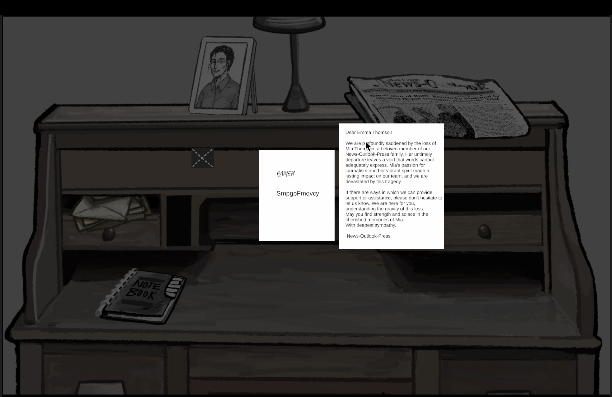
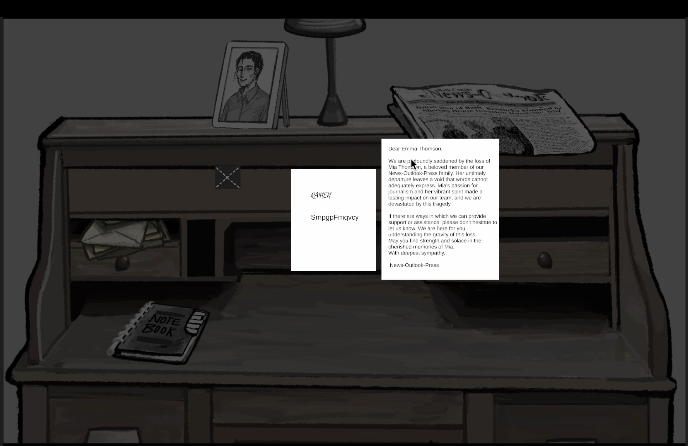

Echo in Reports - Shiloh Guo
Game Description
Embark on a journey where your unique ability allows you to rewind time to ten seconds before a photo was taken, enabling you to perceive the world through the eyes of the photographer. Immerse yourself in a pivotal moment of the past, where every detail holds significance. Your task? Unravel the mysteries concealed within each snapshot. Click on the image to traverse the temporal threshold, scour for vital clues, and piece together the enigmatic puzzle awaiting discovery.
.
******
My ROLE: Game Designer, Narrative Designer, Technical Artist, illustrator
PLATFORM: PC | Team Size: SOLO
GENRE: Puzzle | Storytelling | Graphic Adventures
Gameplay
you open the game and you have a newspaper and a blank notebook. You will learn the truth about a murder by reading, browsing pictures, meditating, and sorting out notes.
 

* Table Interface *
At the onset of the game, players encounter a table adorned with numerous interactive objects. To uncover the mysteries awaiting solution, exploration becomes paramount as players navigate through the varied items on the table.
.........................................
* Collect Information *
Find the icon with the "eye" icon and click on it to collect clues. The collected clues will be automatically stored in your notebook (see the gif on the right)

.
Game Mechanism
I draw inspiration from the real-world process of absorbing information: Imagine an afternoon where you pick up a newspaper, digesting its contents and storing the images and words in your memory. Later, you might sort through and recall this information, organizing it in your notebook.
* Read Mode-Newspaper
1. Players can move the mouse to reach the edge, or use the keyboard W/A/S/D to move the position of the newspaper;
2. Press the M/N button to zoom in or out.

* Read Mode-Picture
1. Players can move to different perspectives from front to back, left, and right by clicking the direction keys on the interface;
2. Click on the "EYE" icon to collect clues.